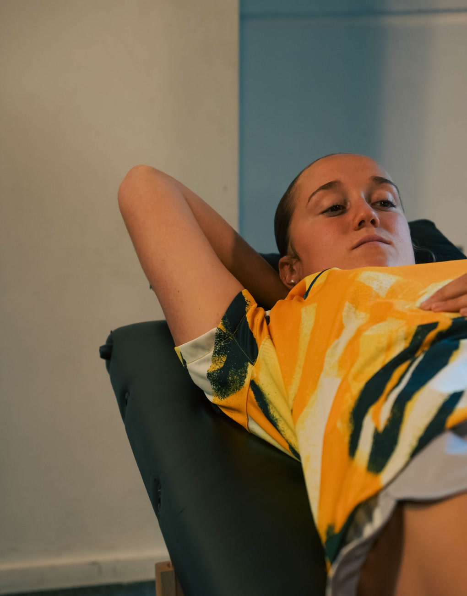
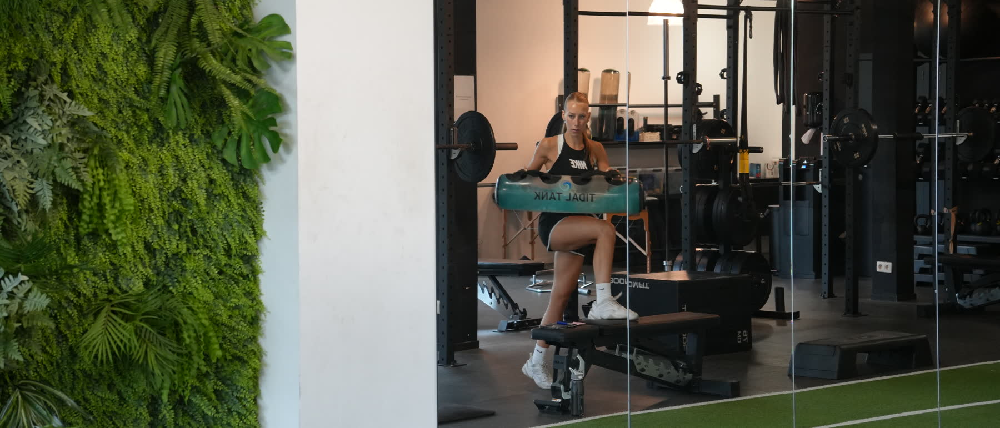
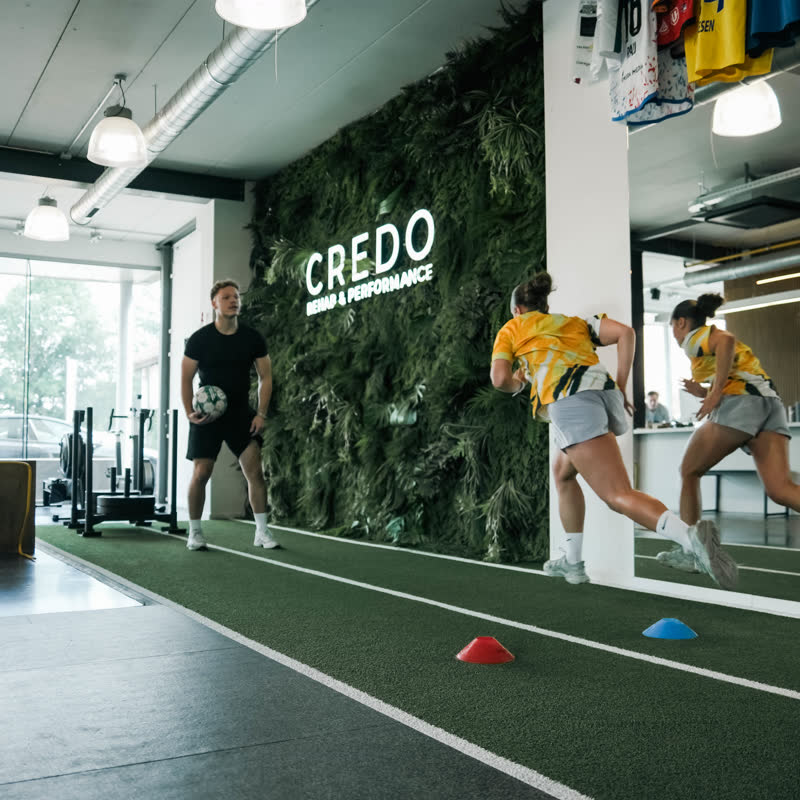
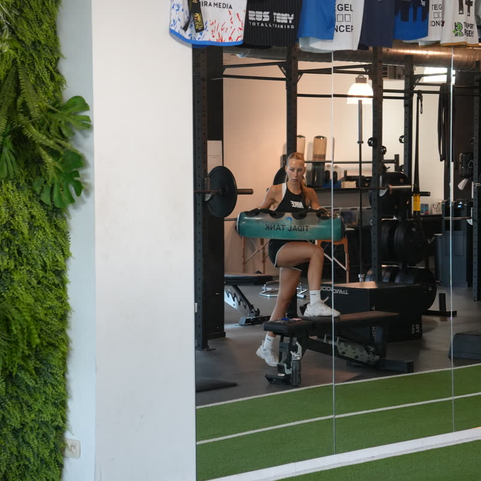
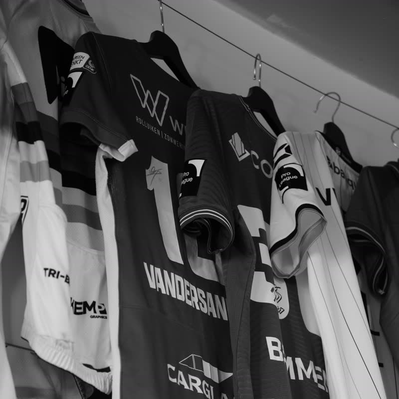
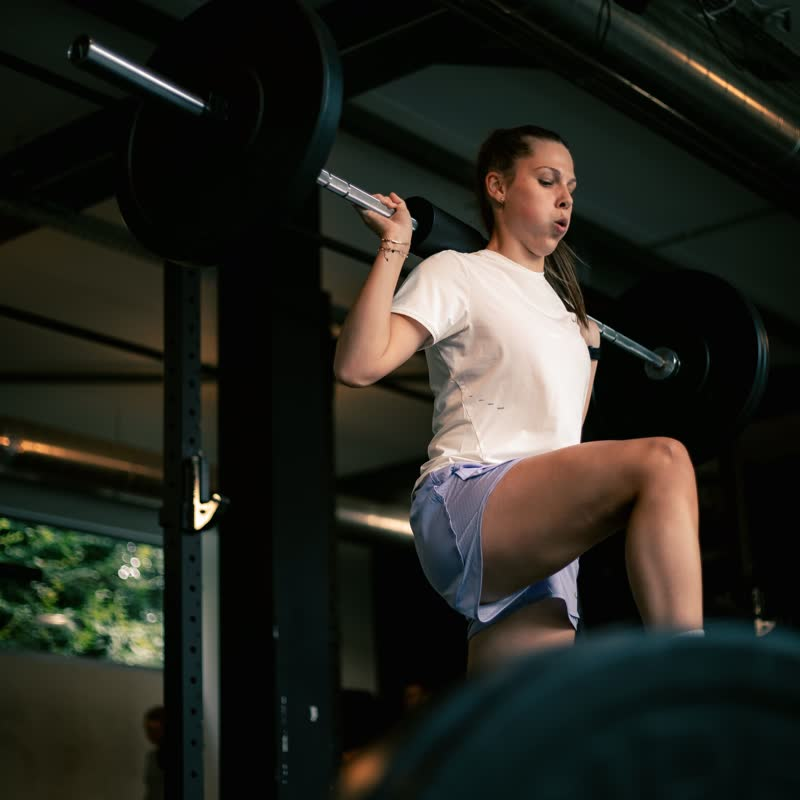

Credo Rehab & Performance — kinesitherapie, revalidatie en performance training in Diepenbeek

Ik heb een klacht of blessure Rehab Pijn, een blessure of een operatie achter de rug. Wij zoeken de oorzaak, behandelen met de hand en bouwen je op tot je weer doet wat je deed. Naar revalidatie Ik wil beter presteren Performance Niet geblesseerd, wel op zoek naar meer. Screening, cijfers en een programma van coaches die wekelijks bij profclubs op het veld staan. Naar performanceCredo / 01
Credo
[ˈkreeːdoː]
Latijns voor ‘ik geloof’
Wij geloven dat een blessure geen eindpunt is, maar een startlijn.
Zes masters revalidatiewetenschappen en kinesitherapie in Diepenbeek. Verschillende van ons staan wekelijks op het veld als physical of strength coach bij de Red Flames, KRC Genk Ladies, OH Leuven en Sporting Hasselt. Die ervaring komt rechtstreeks in jouw behandeling terecht.
Of je nu binnenkomt met een blessure of met een doel: de aanpak is dezelfde. Eerst weten wat er aan de hand is, dan pas behandelen of belasten — en meten of het werkt.

Waarde 01
Motivatie
Waarde 02
Passie
Waarde 03
Empathie
Team / 04
Zes masters.
Eén standaard.
Iedereen hier heeft een master revalidatiewetenschappen en kinesitherapie. Verschillende van ons staan wekelijks op het veld als physical of strength coach bij profclubs. Die ervaring komt rechtstreeks in jouw behandeling terecht.
-

Credentials
- Master revalidatiewetenschappen & kinesitherapie
- Master manuele therapie
- Specialisatie sportvoeding
- Kinesitherapeut Torpedo Hasselt
01
Thomas Casier
Kinesist — Zaakvoerder
-

Credentials
- Master revalidatiewetenschappen & kinesitherapie
- Specialisatie sportletsels
- Physical Coach KRC Genk Ladies (2024–heden)
- Physical Coach Red Flames (2025–heden)
- Strength Coach Sporting Hasselt (2025–heden)
02
Milan Vandecaetsbeek
Kinesist — Zaakvoerder
-

Credentials
- Master revalidatiewetenschappen & kinesitherapie
- Specialisatie sportletsels
- Dry needling
- Blood flow restriction training
- Physical Coach Sporting Hasselt (2020–2025)
- Physical Coach OH Leuven (2025–heden)
03
Tuur Vanderstukken
Kinesist — Zaakvoerder
-

Credentials
- Master revalidatiewetenschappen & kinesitherapie
- Specialisatie sportletsels
- Coach Sporting Hasselt Ladies
- Praktijkassistent UHasselt
04
Rimke Eurlings
Kinesist
-

Credentials
- Master revalidatiewetenschappen & kinesitherapie
- Specialisatie sportletsels
05
Philippe Valvekens
Kinesist
-

Credentials
- Master revalidatiewetenschappen & kinesitherapie
- Specialisatie sportletsels
- Hoofdkinesitherapeut Sporting Hasselt (2025–heden)
06
Dries Verschueren
Kinesist
Uit de zaal / 03
Kapelstraat 89.
Eigen oefenzaal met indoorpiste, krachtrek en behandelruimtes. Geen fitnessketen, geen wachtzaal vol machines — een plek waar aan één ding tegelijk gewerkt wordt.




Clubs en partners waar Credo mee werkt


Ervaringen / 05
Wat patiënten
ervan zeggen.
Reacties van mensen die hier een traject hebben doorlopen.
-
[Review 01 — citaat van de patiënt]
[Naam] — [behandeling]
-
[Review 02 — citaat van de patiënt]
[Naam] — [behandeling]
-
[Review 03 — citaat van de patiënt]
[Naam] — [behandeling]
Praktisch / 06
Voor je belt.
De vragen die het vaakst gesteld worden. Staat het antwoord er niet bij? Bel +32 480 62 85 45.
Heb ik een voorschrift nodig?
Je kan bij ons terecht zonder voorschrift. Wil je terugbetaling van je mutualiteit, dan heb je wel een voorschrift van je arts of specialist nodig. [TE BEVESTIGEN]
Wat kost een sessie?
[TE BEVESTIGEN — tarief per sessie, tarief screening, en of jullie geconventioneerd zijn. Dit is de vraag die het vaakst gesteld wordt; hoe concreter het antwoord, hoe minder drempel.]
Krijg ik het terugbetaald?
[TE BEVESTIGEN — terugbetaling mutualiteit met voorschrift, en of performance-trajecten daar wel of niet onder vallen.]
Hoelang duurt een traject?
Dat hangt af van je klacht en je doel. We werken in vijf stappen — afspraak, onderzoek, plan, opbouw en een eindpunt — en spreken die doelen bij de intake samen af, zodat je weet waar je naartoe werkt in plaats van te blijven komen.
Moet ik sportief zijn om hier te komen?
Nee. Dat we met profclubs werken betekent alleen dat we weten hoe belasting opgebouwd wordt. Dezelfde aanpak geldt voor een pijnlijke schouder of een knie die na een operatie weer moet meedoen.
Wat breng ik mee?
Sportkledij en schoenen waar je in kan bewegen, en je voorschrift of beeldvorming als je die hebt.
Praktisch
- Adres
- Kapelstraat 89
3590 Diepenbeek - Telefoon
- +32 480 62 85 45
- info@credokinesitherapie.be
- Openingsuren
- [TE BEVESTIGEN]
- Parking
- [TE BEVESTIGEN]